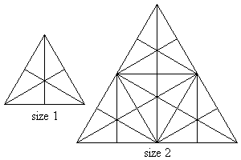

Consider an equilateral triangle in which straight lines are drawn from each vertex to the middle of the opposite side, such as in the size $1$ triangle in the sketch below.

Sixteen triangles of either different shape or size or orientation or location can now be observed in that triangle. Using size $1$ triangles as building blocks, larger triangles can be formed, such as the size $2$ triangle in the above sketch. One-hundred and four triangles of either different shape or size or orientation or location can now be observed in that size $2$ triangle.
It can be observed that the size $2$ triangle contains $4$ size $1$ triangle building blocks. A size $3$ triangle would contain $9$ size $1$ triangle building blocks and a size $n$ triangle would thus contain $n^2$ size $1$ triangle building blocks.
If we denote $T(n)$ as the number of triangles present in a triangle of size $n$, then
$$\begin{align} T(1) &= 16\\ T(2) &= 104 \end{align}$$Find $T(36)$.
solve(n=1) → ?solve(n=36) → ?solve(n=50) → ?